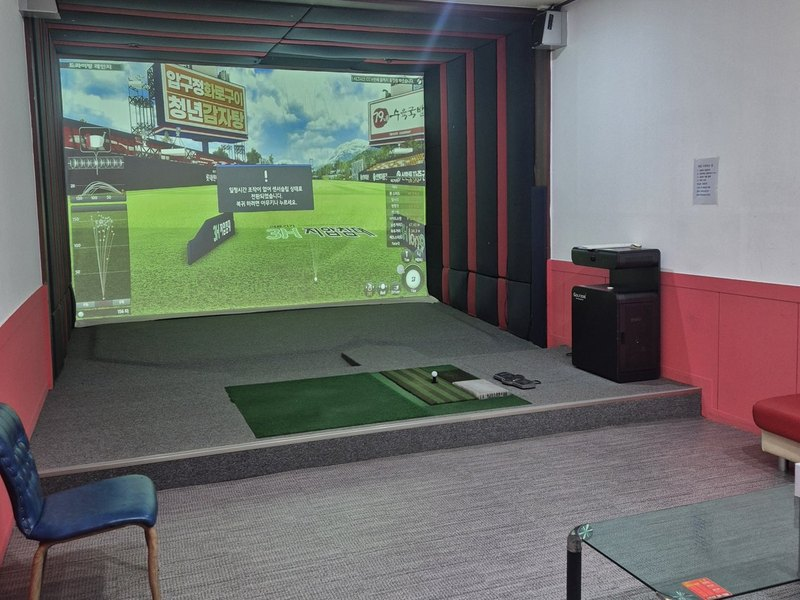

12월 약속은 대개 같은 길로 흐릅니다. 식당에서 한 시간 반, 그리고 문 앞에서 “2차 어디 갈까”를 십 분. 그 십 분이 제일 아깝습니다. 그래서 요즘은 처음부터 한 곳에서 끝내는 쪽을 먼저 계산합니다.
스크린골프장이 그 후보로 자주 올라오는 데는 이유가 있습니다. 골프를 안 쳐 본 사람도 18홀 룰대로 한 판을 끝낼 수 있고, 술을 안 마셔도 다음 날 컨디션이 남습니다. 대한골프협회 조사에서도 1년에 20회 이상 실내 스크린을 이용한 사람이 38.6%로 가장 많았습니다. 이제 ‘가끔 치는 기계’가 아니라 ‘자주 가는 곳’이 된 셈입니다.
해운대 좌동 해천빌딩 6층 매장은 QED 4타석과 일반 3타석, 그리고 스크린 룸 약 4실로 이뤄져 있습니다. 위 사진이 룸 안쪽입니다. 정면 화면과 매트, 그리고 앉을 자리와 테이블이 한 공간에 있어서 순서를 기다리는 사람이 따로 서 있지 않아도 됩니다.
대기 공간에는 소파와 테이블, 커피와 라면 조리기, 무인 키오스크가 있습니다. 단체 이용과 예약이 가능하다고 플레이스에 표기돼 있고, 남녀 화장실이 구분돼 있습니다. 휠체어 출입 표기도 함께 있습니다.
| 1회 | |
|---|---|
| 스크린 18홀 (1인) | 10,000원 |
| 연습장 1시간 | 10,000원 |
18홀 기준 1인 10,000원이니 네 명이면 40,000원입니다. 2차로 카페 한 번 더 가는 값과 크게 다르지 않습니다. 연습장 1시간도 같은 값이라, 골프를 처음인 사람이 섞여 있으면 30분씩 나눠 서는 방법도 있습니다.
요금표에는 룸 이용 조건이 적혀 있지 않습니다. 모임 인원이 정해졌다면 아래 다섯 개를 먼저 확인하세요. 답에 따라 준비가 달라집니다.
전화는 051-747-9933. 타석·스크린 룸·단체는 전화 예약이 가장 빠르다고 안내돼 있습니다.
장산역 13번 출구에서 173m, 도보 3분입니다. 출구에서 해운대로를 따라 남서쪽으로 가다가 왼쪽 골목으로 들어서면 해천빌딩이 나오고, 바로 옆이 대림아크로텔입니다. 차로 오면 건물 지하·타워 주차장을 쓰고 주차권에 도장을 받습니다.
모임이 끝나고 흩어질 때를 생각하면 이 3분이 은근히 큽니다. 대리운전을 부르는 시간 동안 한 명은 계산하고 한 명은 주차권을 받아야 하는데, 역이 가까우면 그 두 가지가 동시에 해결됩니다.
연말 모임 장소를 정할 때 기준은 결국 세 가지입니다. 한 곳에서 끝나는가, 안 치는 사람도 지루하지 않은가, 그리고 이동이 짧은가. 스크린골프장은 이 세 개에 답하기 쉬운 쪽입니다. 대신 룸 조건은 표에 없으니 전화 한 통으로 먼저 확정해 두세요.